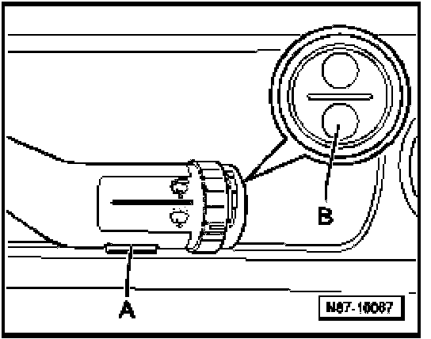
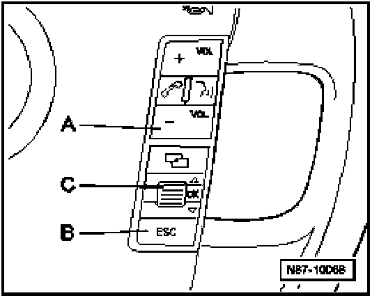

Outside Temperature Display: Description and Operation
Temperature Display Units, Changing (Celsius - Fahrenheit)
Vehicles with menu selection in wiper switch

- Press button -B- for longer than 2 seconds, until main menu "Comfort setup" appears in display.
- Press button -B- up or down to select "Units" from menu.
- Press -A- to call up menu.
Vehicles with menu selection in Multi-function steering wheel

- Press button -A- or -B- until main menu "Comfort setup" appears in display.
- Rotate thumbwheel -C- to select "Units" from menu.
- Press -thumbwheel -C- to call up menu.